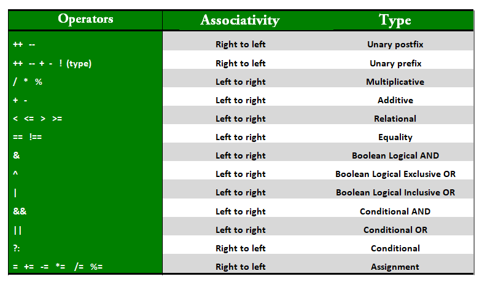

Operators// operators in java are symbols used for specific operation e.g. division / module % // users are not allowed operator overloading but at system level it is allowed ,e.g. concatenation// Arithmetic Operators +, -, /, *, % // Unary Operators -, +, ++, --, ! // Assignment Operator =, +=, -=, *=, %=, /= x+=5 means x = x+5, with assignment operations type cast is performed e.g. byte b+ = 127 // Relational Operators ==, >=, <=, >, <, != // Logical Operators || any condition is true return true, && both condition true, return true, ! if false then return true // Ternary Operator condition ? if true : if false // Bitwise Operators // &, Bitwise AND operator: returns bit by bit AND of input values. // |, Bitwise OR operator: returns bit by bit OR of input values. // ^, Bitwise XOR operator: returns bit-by-bit XOR of input values. // ~, Bitwise Complement Operator: This is a unary operator which returns the one’s complement representation of the input value, i.e., with all bits inverted. // Shift Operators // These operators are used to shift the bits of a number left or right, thereby multiplying or dividing the number by two, respectively. They can be used when we have to multiply or divide a number by two. General format- // number shift_op number_of_places_to_shift; //<<, Left shift operator: shifts the bits of the number to the left and fills 0 on voids left as a result. Similar effect as multiplying the number with some power of two. //>>, Signed Right shift operator: shifts the bits of the number to the right and fills 0 on voids left as a result. The leftmost bit depends on the sign of the initial number. Similar effect to dividing the number with some power of two. //>>>, Unsigned Right shift operator: shifts the bits of the number to the right and fills 0 on voids left as a result. The leftmost bit is set to 0. // instance of operator // object instanceOf object2

|
1. Precedence and Associativity:There is often confusion when it comes to hybrid equations which are equations having multiple operators. The problem is which part to solve first. There is a golden rule to follow in these situations. If the operators have different precedence, solve the higher precedence first. If they have the same precedence, solve according to associativity, that is, either from right to left or from left to right. The explanation of the below program is well written in comments within the program itself.
equals() vs ==equals() method is defined in object and is meant for reference compare now there are multiple classes which overrides this to compare content e.g. String == is always for reference compare
operators in expression.operators in any expression used, the expresion type will be determined based on max(int, operand1, operand 2) // type will be calculated using this |